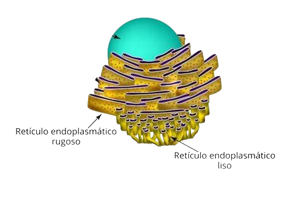
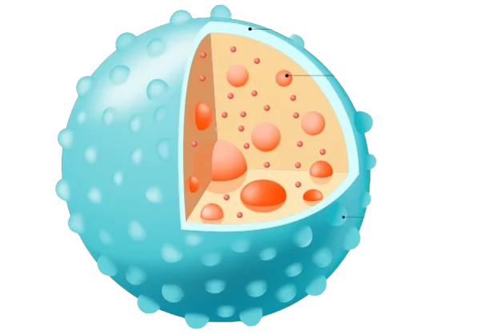
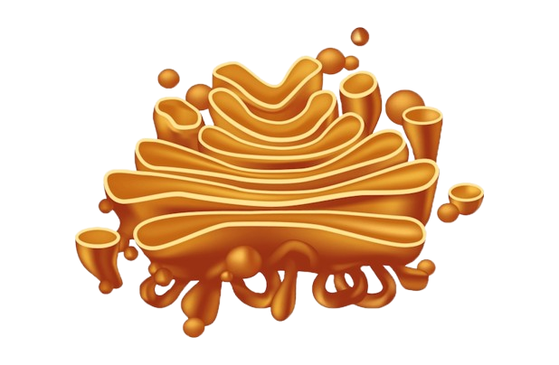
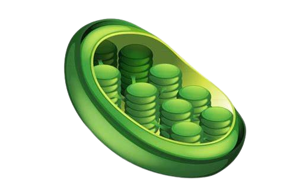
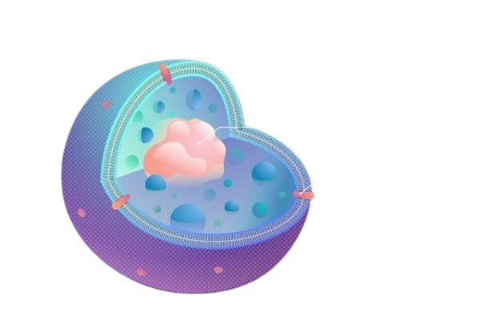
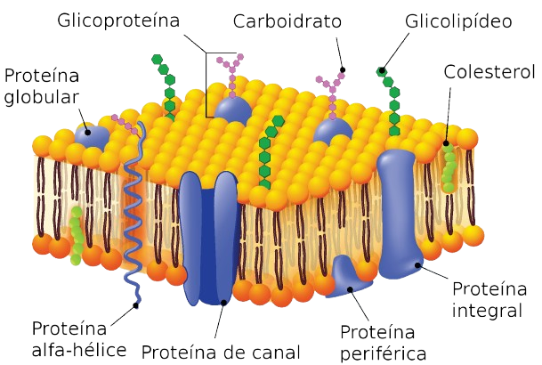
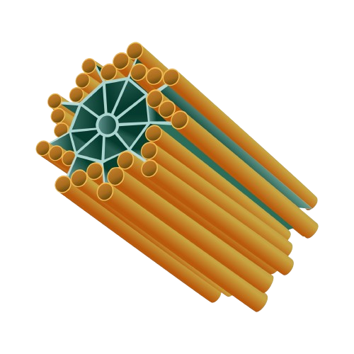
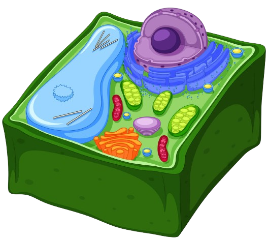
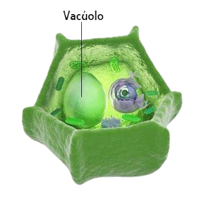

Mitocôndria
As mitocôndrias são organelas celulares encontradas em grande quantidade com grande
atividade metabólica, o número de mitocôndrias varia de uma célula para outra, porém,
normalmente, observam-se centenas de mitocôndrias em uma única célula. São organelas
compostas por membrana dupla, sendo uma externa e uma interna que apresenta muitas
dobras,
as chamadas cristas mitocondriais. Dentro da membrana interna há a matriz mitocondrial.
Na matriz mitocondrial, encontra-se uma grande quantidade de enzimas que atuam na
respiração
celular, outras proteínas, material genético (DNA e RNA) e ribossomos.
As mitocôndrias têm capacidade de se reproduzir e sua função é realizar a respiração
celular
que produz a maior parte da energia utilizada nas funções vitais.
.png)
RER
O retículo endoplasmático rugoso (RER) é uma organela presente nas células eucarióticas,
responsável pela síntese e transporte de proteínas. Sua superfície é coberta por
ribossomos,
o que lhe confere uma aparência rugosa, daí seu nome. Esses ribossomos produzem
proteínas
que são geralmente destinadas à membrana celular, a outras organelas, ou para exportação
fora da célula. Após a síntese, as proteínas são modificadas dentro do RER e
transportadas
em vesículas para o complexo de Golgi, onde são processadas e enviadas ao seu destino
final.
O RER tem um papel fundamental em células que produzem grandes quantidades de proteínas,
como as células do pâncreas e as células imunológicas.

Lisossomos
Os lisossomos são envolvidos apenas pela bicamada lipídica e no seu interior há enzimas
digestivas. Sua função é digerir moléculas orgânicas como lipídios, carboidratos,
proteínas
e ácidos nucleicos (DNA e RNA). O interior dos lisossomos é ácido pois possui enzimas
digestivas, que quebram as moléculas em pequenas porções, fazendo a digestão. As
moléculas a
serem digeridas são englobadas por endocitose e entram na célula envolvidas em vesículas
formadas a partir da membrana chamados endossomas. Depois elas se fundem com os
lisossomos
primários e são quebradas, originando partes menores, como os ácidos graxos. Essas
moléculas
pequenas saem do lisossomo e são aproveitadas no citosol da célula.
Endocitose é um processo que ocorre nas células e tem por objetivo trazer para o
interior
dessa estrutura substâncias por meio da absorção na membrana plasmática.

Aparelho de Golgi
O aparelho de Golgi, ou complexo de Golgi é uma organela formada por pilhas de membranas
achatadas, chamadas de cisternas. Sua principal função é modificar, empacotar e
distribuir
proteínas e lipídios produzidos no retículo endoplasmático. No Golgi, as proteínas podem
sofrer modificações adicionais, como glicosilação, antes de serem enviadas para seus
destinos finais, que podem incluir a membrana plasmática, os lisossomos ou o exterior da
célula. Também é responsável pela formação de vesículas de secreção e lisossomos.

Citoplasma
O citoplasma é a parte da célula que fica entre a membrana plasmática e o núcleo, onde
estão
localizadas as organelas celulares. É composto por uma substância gelatinosa chamada
citosol, que contém água, sais, proteínas e outros nutrientes essenciais para a célula.
O
citoplasma serve como meio de transporte de substâncias e é onde ocorrem muitas reações
metabólicas importantes, como a glicólise. Ele também ajuda a manter a forma da célula e
dá
suporte às organelas, facilitando a movimentação e interação entre elas.

Núcleo
O núcleo é a principal organela de controle da célula eucariótica, armazenando o DNA, que
contém as informações genéticas necessárias para regular as funções celulares e a
reprodução. Envolvido pela membrana nuclear ou envoltório nuclear, ele controla a
passagem
de moléculas entre o núcleo e o citoplasma. Dentro do núcleo, encontramos o nucléolo,
onde
ocorre a síntese de RNA ribossômico (rRNA), essencial para a formação de ribossomos. O
núcleo é, portanto, fundamental para a regulação da atividade genética e do ciclo
celular.

Cloropasto
Presentes apenas em células vegetais e em algumas algas, os cloroplastos são responsáveis
pela fotossíntese, processo que converte luz solar em energia química armazenada em
moléculas de glicose. Eles contêm o pigmento clorofila, que dá às plantas sua cor verde
e
captura a luz solar. Como as mitocôndrias, os cloroplastos têm DNA próprio e são
formados
por membranas internas chamadas tilacoides, onde ocorrem as reações de fotossíntese.

Ribossomos
São as organelas mais abundantes nas células. Ribossomos são estruturas celulares,
presentes
em células procarióticas e eucarióticas, responsáveis pela síntese de proteínas. Essas
estruturas são formadas por duas subunidades, uma maior e uma menor, constituídas por
moléculas de RNA (ácido ribonucleico) e proteínas.
As proteínas são macromoléculas que são compostas por aminoácidos, as proteínas
constituem
músculos, tendões, cartilagens, tecido conjuntivo, unhas e cabelos, além de alguns
hormônios.
Os aminoácidos são utilizados na síntese de proteínas, Assim, eles ligam-se entre si
para
formar as proteínas, sendo portanto a "matéria prima" desses macronutrientes.

REL
O retículo endoplasmático liso (REL) é uma organela presente nas células eucarióticas,
caracterizada pela ausência de ribossomos em sua superfície, o que lhe dá um aspecto
liso.
Suas funções são diversas, incluindo a síntese de lipídios (como fosfolipídios e
colesterol), o metabolismo de carboidratos, a desintoxicação de substâncias tóxicas e o
armazenamento de íons de cálcio, essencial para processos como a contração muscular. O
REL é
especialmente abundante em células que realizam a síntese de hormônios esteroides, como
as
células das glândulas suprarrenais, e em células do fígado, onde auxilia na
desintoxicação
de drogas e outros compostos químicos.
Peroxissomos
São organelas envolvidas em reações de oxidação, onde ácidos graxos são degradados, e
substâncias tóxicas, como o peróxido de hidrogênio, são neutralizadas. Peroxissomos
possuem
enzimas que convertem o peróxido de hidrogênio em água e oxigênio, protegendo a célula
de
danos oxidativos. Além disso, participam da degradação de ácidos graxos de cadeia longa,
o
que é essencial para o metabolismo celular.

Membrana Plasmática
A membrana plasmática envolve todas as células e regula o que entra e sai delas.
Composta
por uma bicamada lipídica com proteínas embutidas, essa estrutura semipermeável mantém o
ambiente interno estável (homeostase), permitindo a entrada de nutrientes e a expulsão
de
resíduos. Além disso, as proteínas da membrana desempenham funções de comunicação
celular e
transporte de moléculas.

Centríolos
Os centríolos são pequenas estruturas cilíndricas formadas por microtúbulos, encontrados
nas
células animais, próximos ao núcleo, dentro do centrossomo. Eles desempenham um papel
fundamental na divisão celular, ajudando a organizar o fuso mitótico que separa os
cromossomos durante a mitose e a meiose. Além disso, os centríolos participam na
formação de
cílios e flagelos, estruturas que ajudam na locomoção celular. Apesar de essenciais em
células animais, muitas células vegetais não possuem centríolos, utilizando outras
estruturas para auxiliar na divisão celular.

Parede Celular
Presente em células vegetais, fungos e algumas bactérias, a parede celular é uma
estrutura
rígida que oferece suporte mecânico e proteção. Nas plantas, é composta principalmente
de
celulose, um polissacarídeo que confere resistência. A parede celular também ajuda a
regular
a entrada e saída de substâncias e a manter a forma da célula.

Vacúolos
O vacúolo central, especialmente desenvolvido em células vegetais, é uma grande vesícula
que
armazena água, íons, nutrientes e resíduos. Ele mantém a pressão de turgor, essencial
para a
sustentação das plantas, e também pode armazenar substâncias tóxicas ou de defesa contra
herbívoros. Em células animais, vacúolos são menores e têm funções variadas, incluindo
armazenamento e transporte de materiais.
